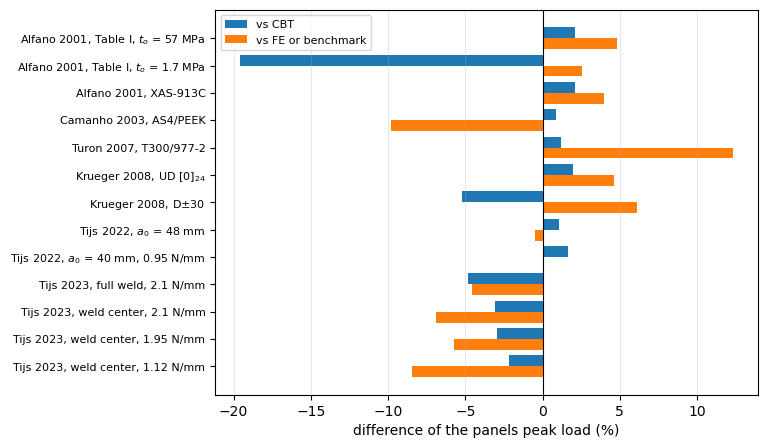

Validation of the cohesive zone model against mode I DCB results of the literature#
This notebook collects the results of the validation notebooks of the cohesive connection 'SB_TSL' (see Cohesive zone model) into two tables, the peak loads and the initial compliances, and discusses what they show about the model and its limits. The model was compared with seven references that report mode I double cantilever beam (DCB) results, each with its own notebook:
Alfano and M. A. Crisfield, Finite element interface models for the delamination analysis of laminated composites: mechanical and computational issues, Int. J. Numer. Meth. Engng 50(7) (2001) 1701-1736, https://doi.org/10.1002/nme.93, dcb_alfano2001;
Camanho, C. G. Dávila and M. F. de Moura, Numerical simulation of mixed-mode progressive delamination in composite materials, J. Compos. Mater. 37(16) (2003) 1415-1438, https://doi.org/10.1177/0021998303034505, dcb_camanho2003;
Turon, C. G. Dávila, P. P. Camanho and J. Costa, An engineering solution for mesh size effects in the simulation of delamination using cohesive zone models, Eng. Fract. Mech. 74(10) (2007) 1665-1682, https://doi.org/10.1016/j.engfracmech.2006.08.025, dcb_turon2007;
Krueger, An Approach to Assess Delamination Propagation Simulation Capabilities in Commercial Finite Element Codes, NASA/TM-2008-215123, 2008, dcb_krueger2008;
Tijs, S. Abdel-Monsef, J. Renart, A. Turon and C. Bisagni, Characterization and analysis of the interlaminar behavior of thermoplastic composites considering fiber bridging and R-curve effects, Composites Part A 162 (2022) 107101, https://doi.org/10.1016/j.compositesa.2022.107101, dcb_tijs2022;
Leciñana, J. Renart, A. Turon, J. Zurbitu and B. H. A. H. Tijs, Characterization and analysis of the mode I interlaminar fatigue behaviour of thermoplastic composites considering R-curve effects, Eng. Fract. Mech. 286 (2023) 109273, https://doi.org/10.1016/j.engfracmech.2023.109273, dcb_lecinana2023;
Tijs, Analysis of Thermoplastic Composites and Conduction Welded Joints, PhD thesis, Delft University of Technology, 2023, ISBN 978-94-6473-101-9, dcb_tijs2023_phd;
and the mixed-mode benchmarks of R. Krueger, Development and Application of Benchmark Examples for Mixed-Mode I/II Quasi-Static Delamination Propagation Predictions, NASA/CR-2012-217562, 2012, which are only recorded, krueger2012_mmb_benchmark. The case of Camanho et al. (2003) is kept for reference, but it is not used to validate the model: the FE and experimental load-opening curves of the reference are 12-21% less stiff than the corrected beam theory, more than transverse shear and root rotation explain, and the reference does not give enough detail to find out why; the experimental peak, 147.1 N, is 6% above the corrected beam theory with the same \(G_{Ic}\); and the FE model has about one decohesion element per cohesive zone length, which overpredicts the peak load (Turon et al. 2007).
Model. A symmetric DCB, dcb_utils.solve_dcb: CLPT arms, far end clamped, arm tips opened to \(\pm\delta/2\) by prescribed displacements, the load being the reaction of the prescribed displacement. The bonded region is split into a cohesive domain ('SB_TSL', bilinear law) of length \(L_{tsl}\) ahead of the initial crack front and a perfect bond ('SB') over the rest, such that only the region reached by the crack needs the resolution of the cohesive zone. A weld narrower
than the specimen (Tijs 2023) is represented by starting the integration points outside the bonded strip fully damaged. The discretisation follows the rules of the convergence study (dcb_utils.discretize): \(m_{tsl} = \lceil 1.25\,\lambda L_{tsl} \rceil\) with at most 25 terms and \(n_x = 10\,L_{tsl}/l_{cz}\), but not less than \(4\,m_{tsl}\), rounded up to a multiple of 10, and \(L_{tsl}\) covers the crack growth plus a margin of
\(3\,l_{cz} + 8/\lambda\); the range of openings is limited so that \(L_{tsl}\) stays resolved. The penalty stiffness is \(k_o = 10^5\) N/mm\(^3\), except for the low-strength case of Alfano and Crisfield, run with \(10^3\) N/mm\(^3\) (see its notebook).
Reference of linear elastic fracture mechanics (LEFM). The corrected beam theory (CBT), dcb_utils.lefm_curve(..., corrected=True), with the crack length \(a + \chi h\) of Williams, \(\chi = \sqrt{E_{11}/(11 G_{13})\,[3 - 2(\Gamma/(1+\Gamma))^2]}\), \(\Gamma = 1.18\sqrt{E_{11}E_{22}}/G_{13}\), and the bending stiffness \(D_{11} b\) of the arm.
Data. Values given in tables of the references are used as such (t); curves were read from the figures by eye (d), with an uncertainty of about 2-5 N; m marks the mean of the digitised peaks of several tests (full weld: 150 and 170 N; weld center: 122-136 N). Assumptions are needed where the references are incomplete: the opening convention (Alfano and Crisfield plot the displacement of one arm, \(\delta = 2u\)), the crack length of one test of Tijs et al. (2022) inferred from its
compliance, and the elastic properties and length of the welded specimens of Tijs (2023). The panels curves are read from results/*.npz, written by the validation notebooks; the FE curves and the experimental peaks are those of the dictionaries of those notebooks, where their sources are given.
[1]:
%matplotlib inline
import matplotlib.pyplot as plt
import numpy as np
from IPython.display import Markdown, display
import dcb_utils as du
R = 'results'
# Alfano and Crisfield plot the displacement of one arm, u, and delta = 2u
u2d = lambda u: 2*np.asarray(u, dtype=float)
# AS4D/PEKK-FC, average of the tension and compression moduli (Tijs et al. 2022)
pekk = dict(E1=(138300. + 128000.)/2, E2=(10400. + 11500.)/2, nu12=0.316, G12=5190.)
# Krueger (2008) benchmark, Eq. (5): P1 (N) and GI (J/m2) at delta/2 = 1 mm, see
# dcb_krueger2008.ipynb
def kbench(P1, GI, G1c):
s = np.sqrt(G1c*1000./np.asarray(GI, dtype=float))
return np.r_[0., 2*s], np.r_[0., np.asarray(P1, dtype=float)*s]
k_ud = dict(E1=139400., E2=10160., nu12=0.30, G12=4600., h=1.5, b=25., L=150.,
a0=30., G1c=0.1703)
k_md_arm = [30, -30, 0, -30, 0, 30, 0, 0, 0, 0, 30, 0, -30, 0, -30, 30]
k_md = dict(E1=146900., E2=10600., nu12=0.33, G12=5450., stack=k_md_arm, plyt=0.125,
b=25.4, L=177.8, a0=31., G1c=0.3405)
# quasi-isotropic laminate of the welded specimens (Tijs 2023)
qi = [0, 45, 90, -45, 0, -45, 90, 45]
qi = qi + qi[::-1]
Cases#
For each case: label, specimen for the LEFM curve, results file of panels, FE curve \((\delta, P)\) or None and its source, experimental peak or None and its source. The benchmark of Krueger (2008) is not an FE curve but the delamination onset criterion of his Eq. (5), the onset at mid-width, evaluated from the loads of his Figs. 13 and 36 and the energy release rates of his Figs. 11 and 34; it is entered in the FE column. The two Krueger cases are listed with \(\tau_o\) = 40
MPa, the reference giving no strength. Tijs 2022 with \(a_0\) = 40 mm: panels and CBT with \(G_{Ic}\) = 0.95 N/mm, the propagation toughness of the test without fibre bridging.
[2]:
cases = [
('Alfano 2001, Table I, $t_o$ = 57 MPa',
dict(E1=135300., E2=9000., nu12=0.24, G12=5200., h=1.5, b=20., L=100., a0=30., G1c=0.28),
'alfano2001_TableI_to57', (u2d([0, 1.0, 1.5, 2.0, 3.0, 4.0, 4.8]), np.array([0, 61.5, 52., 44., 35., 30.5, 28.])), 'd', None, None),
('Alfano 2001, Table I, $t_o$ = 1.7 MPa',
dict(E1=135300., E2=9000., nu12=0.24, G12=5200., h=1.5, b=20., L=100., a0=30., G1c=0.28),
'alfano2001_TableI_to1.7', (u2d([0, 0.5, 0.9, 1.2, 1.45, 2.0]), np.array([0, 24., 37., 45., 49.5, 46.])), 'd', None, None),
('Alfano 2001, XAS-913C',
dict(E1=126000., E2=7500., nu12=0.263, G12=4981., h=1.5, b=30., L=100., a0=30., G1c=0.281),
'alfano2001_TableII_XAS913C', (u2d([0, 1.1, 1.5, 2.0]), np.array([0, 90., 80., 70.])), 'd', None, None),
('Camanho 2003, AS4/PEEK',
dict(E1=122700., E2=10100., nu12=0.25, G12=5500., h=1.56, b=25.4, L=102., a0=32.9, G1c=0.969),
'camanho2003_DCB_AS4PEEK', (np.array([0, 4.0, 5.0, 5.3, 5.8]), np.array([0, 116., 150., 155.3, 143.])), 't', 147.1, 't'),
('Turon 2007, T300/977-2',
dict(E1=150000., E2=11000., nu12=0.25, G12=6000., h=1.98, b=20., L=150., a0=55., G1c=0.352),
'turon2007_le0.125_tau60', (np.array([0, 4.0, 5.0, 5.3, 6.0]), np.array([0, 44., 55., 57., 53.])), 'd', 62., 'd'),
('Krueger 2008, UD $[0]_{24}$',
k_ud, 'krueger2008_DCB_UD_tau40',
kbench([81.0, 74.0, 68.0, 62.5, 57.5, 52.5, 36.7],
[303., 270., 240., 215., 192., 170., 105.], 0.1703), 'd', None, None),
('Krueger 2008, D$\\pm30$',
k_md, 'krueger2008_DCB_MD_tau40',
kbench([128.0, 117.5, 108.0, 99.5, 91.5, 63.0],
[532., 478., 425., 378., 342., 212.], 0.3405), 'd', None, None),
('Tijs 2022, $a_0$ = 48 mm',
dict(pekk, h=2.1, b=25., L=100., a0=48., G1c=1.12),
'tijs2022_a48', (np.array([0, 5.7, 6.5, 7.5]), np.array([0, 167., 152., 138.])), 'd', 142., 'd'),
('Tijs 2022, $a_0$ = 40 mm, 0.95 N/mm',
dict(pekk, h=2.1, b=25., L=100., a0=40., G1c=0.95),
'tijs2022_a40_G0.95', None, None, 161., 'd'),
('Tijs 2023, full weld, 2.1 N/mm',
dict(pekk, stack=qi, plyt=0.14, b=25., bond_width=15., L=144.3, a0=44.3, G1c=2.1),
'tijs2023_full_weld', (np.array([0, 6.2, 7., 8.]), np.array([0, 155., 149., 141.])), 'd', 160., 'm'),
('Tijs 2023, weld center, 2.1 N/mm',
dict(pekk, stack=qi, plyt=0.14, b=12.7, L=136.2, a0=36.2, G1c=2.1),
'tijs2023_weld_center', (np.array([0, 5.0, 6., 7.]), np.array([0, 128., 121., 113.])), 'd', 129., 'm'),
('Tijs 2023, weld center, 1.95 N/mm',
dict(pekk, stack=qi, plyt=0.14, b=12.7, L=136.2, a0=36.2, G1c=1.95),
'tijs2023_weld_center_standard', (np.array([0, 5.3, 6., 7.]), np.array([0, 122., 118., 111.])), 'd', 123., 'd'),
('Tijs 2023, weld center, 1.12 N/mm',
dict(pekk, stack=qi, plyt=0.14, b=12.7, L=136.2, a0=36.2, G1c=1.12),
'tijs2023_weld_center_autoclave', (np.array([0, 4.5, 5., 6.]), np.array([0, 96., 94., 86.])), 'd', None, None),
]
Peak loads#
panels \(P_{max}\) and the opening at the peak, the FE (or benchmark) and test peaks, the CBT peak, and the differences of panels to each, \((P_{panels} - P_{ref})/P_{ref}\) in %. \(\Delta K_0\) is the difference of the initial stiffness of panels to that of the CBT, \(\Delta a\) the crack growth of the panels run, \(e_{eq} = \max|P_{traction}/P - 1|\) the largest difference between the reaction and the integral of the cohesive tractions. Superscripts: t
table of the reference, d digitised, m mean of digitised tests, n kept for reference, not used to validate the model.
[3]:
rows = []
for label, case, fname, fe, fe_src, exp_peak, exp_src in cases:
r = du.load(f'{R}/{fname}.npz')
pan = du.summary(np.r_[0, r['delta']], np.r_[0, r['P']])
# the LEFM curve covers the crack growth of every run
cbt = du.summary(*du.lefm_curve(case, case['a0'] + 60, corrected=True))
row = dict(label=label, Pmax=pan['Pmax'], dPmax=pan['delta_Pmax'],
cbt=cbt['Pmax'], dK0=100*(pan['K0']/cbt['K0'] - 1),
growth=float(r['a'][-1] - case['a0']), bisections=int(r['failed']),
eeq=100*float(r['max_rel_P_traction']))
if fe is not None:
row['fe'], row['fe_src'] = du.summary(*fe)['Pmax'], fe_src
if exp_peak is not None:
row['exp'], row['exp_src'] = exp_peak, exp_src
rows.append(row)
# cases kept for reference only, see the note of each notebook
NOTES = {'Camanho 2003, AS4/PEEK': 'n'}
diff = lambda a, b: 100*(a/b - 1)
lines = ['| case | panels $P_{max}$ | $\\delta$ | FE $P_{max}$ | diff. (%) | test $P_{max}$ | diff. (%) '
'| CBT $P_{max}$ | diff. (%) | $\\Delta K_0$ (%) | $\\Delta a$ (mm) | bisections | $e_{eq}$ (%) |',
'|---|---|---|---|---|---|---|---|---|---|---|---|---|']
for r in rows:
fe = (f"{r['fe']:.1f}<sup>{r['fe_src']}</sup> | {diff(r['Pmax'], r['fe']):+.1f}" if 'fe' in r else '- | -')
ex = (f"{r['exp']:.1f}<sup>{r['exp_src']}</sup> | {diff(r['Pmax'], r['exp']):+.1f}" if 'exp' in r else '- | -')
label = r['label'] + (f"<sup>{NOTES[r['label']]}</sup>" if r['label'] in NOTES else '')
lines.append(f"| {label} | {r['Pmax']:.1f} | {r['dPmax']:.2f} | {fe} | {ex} | {r['cbt']:.1f} "
f"| {diff(r['Pmax'], r['cbt']):+.1f} | {r['dK0']:+.0f} | {r['growth']:.1f} | {r['bisections']} | {r['eeq']:.2f} |")
display(Markdown('\n'.join(lines)))
case |
panels \(P_{max}\) |
\(\delta\) |
FE \(P_{max}\) |
diff. (%) |
test \(P_{max}\) |
diff. (%) |
CBT \(P_{max}\) |
diff. (%) |
\(\Delta K_0\) (%) |
\(\Delta a\) (mm) |
bisections |
\(e_{eq}\) (%) |
|---|---|---|---|---|---|---|---|---|---|---|---|---|
Alfano 2001, Table I, \(t_o\) = 57 MPa |
64.5 |
1.85 |
61.5d |
+4.8 |
63.2 |
+2.1 |
+17 |
9.0 |
0 |
0.12 |
||
Alfano 2001, Table I, \(t_o\) = 1.7 MPa |
50.8 |
2.90 |
49.5d |
+2.6 |
63.2 |
-19.6 |
-25 |
6.0 |
0 |
0.00 |
||
Alfano 2001, XAS-913C |
93.6 |
1.87 |
90.0d |
+4.0 |
91.6 |
+2.1 |
+17 |
9.1 |
0 |
0.12 |
||
Camanho 2003, AS4/PEEKn |
140.1 |
4.09 |
155.3t |
-9.8 |
147.1t |
-4.8 |
138.9 |
+0.9 |
+14 |
7.4 |
0 |
0.08 |
Turon 2007, T300/977-2 |
64.0 |
4.16 |
57.0d |
+12.3 |
62.0d |
+3.3 |
63.3 |
+1.2 |
+12 |
11.1 |
0 |
0.16 |
Krueger 2008, UD \([0]_{24}\) |
63.5 |
1.43 |
60.7d |
+4.6 |
62.3 |
+2.0 |
+18 |
8.5 |
0 |
0.07 |
||
Krueger 2008, D\(\pm30\) |
108.7 |
1.70 |
102.4d |
+6.1 |
114.7 |
-5.2 |
+10 |
7.1 |
0 |
0.03 |
||
Tijs 2022, \(a_0\) = 48 mm |
166.2 |
5.66 |
167.0d |
-0.5 |
142.0d |
+17.1 |
164.5 |
+1.1 |
+14 |
10.1 |
0 |
0.10 |
Tijs 2022, \(a_0\) = 40 mm, 0.95 N/mm |
182.1 |
3.71 |
161.0d |
+13.1 |
179.1 |
+1.6 |
+17 |
10.6 |
0 |
0.10 |
||
Tijs 2023, full weld, 2.1 N/mm |
148.0 |
6.41 |
155.0d |
-4.5 |
160.0m |
-7.5 |
155.5 |
-4.8 |
+4 |
4.9 |
0 |
7.61 |
Tijs 2023, weld center, 2.1 N/mm |
119.2 |
5.82 |
128.0d |
-6.9 |
129.0m |
-7.6 |
123.0 |
-3.1 |
+8 |
5.5 |
0 |
0.01 |
Tijs 2023, weld center, 1.95 N/mm |
115.0 |
5.58 |
122.0d |
-5.7 |
123.0d |
-6.5 |
118.5 |
-3.0 |
+8 |
5.8 |
0 |
0.01 |
Tijs 2023, weld center, 1.12 N/mm |
87.9 |
4.13 |
96.0d |
-8.5 |
89.8 |
-2.2 |
+9 |
8.2 |
0 |
0.05 |
[4]:
fig, ax = plt.subplots(figsize=(7, 5))
y = np.arange(len(rows))[::-1]
ax.barh(y + 0.2, [diff(r['Pmax'], r['cbt']) for r in rows], height=0.4, label='vs CBT')
ax.barh(y - 0.2, [diff(r['Pmax'], r['fe']) if 'fe' in r else np.nan for r in rows], height=0.4,
label='vs FE or benchmark')
ax.set_yticks(y)
ax.set_yticklabels([r['label'] for r in rows], fontsize=8)
ax.axvline(0, color='k', lw=0.8)
ax.set_xlabel('difference of the panels peak load (%)')
ax.grid(True, axis='x', alpha=0.3)
ax.legend(fontsize=8)
plt.show()

Sensitivity to the penalty stiffness and to the strength#
Turon et al. (2007): \(k_o = 10^6\) N/mm\(^3\), the value of the reference, against the \(10^5\) N/mm\(^3\) of the table. Alfano and Crisfield (2001), Table I, \(t_o\) = 1.7 MPa: \(k_o = 10^5\) N/mm\(^3\) against the \(10^3\) N/mm\(^3\) of the table, both with 30 terms over the cohesive domain of 70 mm. Krueger (2008): the reference uses the virtual crack closure technique and gives no strength, so \(\tau_o = 40\) and 60 MPa are run. Difference of the varied run to the run of the table.
[5]:
pairs = [('Alfano 2001, Table I, $t_o$ = 1.7 MPa: $k_o = 10^5$ against $10^3$ N/mm³',
'alfano2001_TableI_to1.7', 'alfano2001_TableI_to1.7_K1e5'),
('Turon 2007: $k_o = 10^6$ against $10^5$ N/mm³', 'turon2007_le0.125_tau60',
'turon2007_le0.125_tau60_K1e6'),
('Krueger 2008, UD: $\\tau_o$ = 60 against 40 MPa', 'krueger2008_DCB_UD_tau40', 'krueger2008_DCB_UD_tau60'),
('Krueger 2008, D$\\pm30$: $\\tau_o$ = 60 against 40 MPa', 'krueger2008_DCB_MD_tau40',
'krueger2008_DCB_MD_tau60')]
lines = ['| variation | $P_{max}$ (N) | $\\delta(P_{max})$ (mm) | varied $P_{max}$ (N) | $\\delta(P_{max})$ (mm) | diff. (%) |',
'|---|---|---|---|---|---|']
for label, a, b in pairs:
s = [du.summary(np.r_[0, r['delta']], np.r_[0, r['P']]) for r in (du.load(f'{R}/{a}.npz'), du.load(f'{R}/{b}.npz'))]
lines.append(f"| {label} | {s[0]['Pmax']:.2f} | {s[0]['delta_Pmax']:.2f} | {s[1]['Pmax']:.2f} "
f"| {s[1]['delta_Pmax']:.2f} | {diff(s[1]['Pmax'], s[0]['Pmax']):+.2f} |")
display(Markdown('\n'.join(lines)))
variation |
\(P_{max}\) (N) |
\(\delta(P_{max})\) (mm) |
varied \(P_{max}\) (N) |
\(\delta(P_{max})\) (mm) |
diff. (%) |
|---|---|---|---|---|---|
Alfano 2001, Table I, \(t_o\) = 1.7 MPa: \(k_o = 10^5\) against \(10^3\) N/mm³ |
50.78 |
2.90 |
50.81 |
2.90 |
+0.07 |
Turon 2007: \(k_o = 10^6\) against \(10^5\) N/mm³ |
64.02 |
4.16 |
64.13 |
4.19 |
+0.17 |
Krueger 2008, UD: \(\tau_o\) = 60 against 40 MPa |
63.52 |
1.43 |
64.24 |
1.39 |
+1.14 |
Krueger 2008, D\(\pm30\): \(\tau_o\) = 60 against 40 MPa |
108.69 |
1.70 |
109.97 |
1.66 |
+1.17 |
Initial compliance#
The linear elastic compliance \(C = \delta/P\) of panels, dcb_utils.elastic_compliance, against the compliances measured by Leciñana et al. (2023, Table 3 and Fig. 10) and the compliance calibrations of Tijs (2023, Table 5.4.1), \(C^{1/3} = m\,a + n\), and against the CBT, \(C = 2 (a + \chi h)^3/(3 D_{11} b)\). The data are those of the notebooks dcb_lecinana2023 and dcb_tijs2023_phd; each row gives the range of the
differences of panels over the crack lengths listed, \((C_{panels} - C_{ref})/C_{ref}\).
[6]:
spec_lec = dict(E1=138300., E2=10400., nu12=0.316, G12=5190., h=15*0.138, b=25., G1c=1.12)
a_lec = np.array([32.05, 33.4, 35.93, 38.05, 42.97])
C_lec = np.array([0.0115, 0.0129, 0.0164, 0.0190, 0.0265])
lin = dict(k_o=1.e5, tau_o=87., L_tsl=20., m_tsl=15, nx=60)
C_pan = np.array([du.elastic_compliance(dict(spec_lec, L=a + 100., a0=a, **lin), a) for a in a_lec])
C_cbt = du.compliance_cbt(dict(spec_lec, L=100., a0=40.), a_lec)
rng = lambda v: f'{v.min():+.1f} to {v.max():+.1f}'
crows = [['Leciñana et al. (2023), Fig. 10', 'UD, 25 mm', f'$a_0$ = {a_lec[0]:.2f}-{a_lec[-1]:.2f} mm',
rng(100*(C_pan/C_lec - 1)), rng(100*(C_pan/C_cbt - 1))]]
calibration = {
'autoclave UD, 25 mm': dict(pekk, h=2.1, b=25., cal_m=0.006060, cal_n=0.055641),
'full weld QI, 25 mm': dict(pekk, stack=qi, plyt=0.14, b=25., bond_width=15., cal_m=0.006908, cal_n=0.036918),
'weld center QI, 12.7 mm': dict(pekk, stack=qi, plyt=0.14, b=12.7, cal_m=0.008594, cal_n=0.032224),
}
a_cal = np.array([30., 35., 40., 45.])
for name, cal in calibration.items():
C_test = (cal['cal_m']*a_cal + cal['cal_n'])**3
base = dict(cal, G1c=1.12, **lin)
C_p = np.array([du.elastic_compliance(dict(base, a0=a, L=a + 100.), a) for a in a_cal])
C_b = du.compliance_cbt(dict(base, a0=40., L=140.), a_cal)
crows.append(['Tijs (2023), Table 5.4.1', name, '$a$ = 30-45 mm', rng(100*(C_p/C_test - 1)),
rng(100*(C_p/C_b - 1))])
lines = ['| reference | specimens | crack lengths | panels vs test (%) | panels vs CBT (%) |', '|---|---|---|---|---|']
lines += ['| ' + ' | '.join(r) + ' |' for r in crows]
display(Markdown('\n'.join(lines)))
reference |
specimens |
crack lengths |
panels vs test (%) |
panels vs CBT (%) |
|---|---|---|---|---|
Leciñana et al. (2023), Fig. 10 |
UD, 25 mm |
\(a_0\) = 32.05-42.97 mm |
-18.9 to -15.5 |
-20.0 to -15.5 |
Tijs (2023), Table 5.4.1 |
autoclave UD, 25 mm |
\(a\) = 30-45 mm |
-41.4 to -28.0 |
-20.9 to -14.7 |
Tijs (2023), Table 5.4.1 |
full weld QI, 25 mm |
\(a\) = 30-45 mm |
-15.2 to -4.7 |
-12.0 to -6.8 |
Tijs (2023), Table 5.4.1 |
weld center QI, 12.7 mm |
\(a\) = 30-45 mm |
-2.1 to +6.6 |
-13.5 to -7.5 |
Discussion#
Same cohesive law as the reference. For the DCB of Tijs et al. (2022), which is also the reference case of the MSc thesis of D’Souza (2024), the FE model of the paper uses the same geometry, material and bilinear law (\(G_{Ic}\) = 1.12 N/mm, \(\tau^0\) = 87 MPa).
panelspredicts the peak within 1% of that of the paper, at the same opening.Cohesive zone beyond LEFM. With the low strength \(t_o\) = 1.7 MPa of Alfano and Crisfield (2001) the process zone is of the order of the specimen length and the peak of their interface model is about 22% below the corrected beam theory;
panelsreproduces it within about 3%, at the same opening and with the same initial stiffness, with \(k_o = 10^3\) N/mm\(^3\) and the cohesive domain over the whole bonded length.Nominal strengths. For the unidirectional specimens with nominal strengths, the
panelspeak is within about 2% of the corrected beam theory, and after the peak it follows the LEFM propagation branch. The FE results of the references scatter by about \(\pm 10\%\) around the corrected beam theory: 1 mm decohesion elements for a cohesive zone of 1.35 mm in Camanho et al. (2003), whose FE peak is above both the test and the beam theories, and about 57 N in Turon et al. (2007), below both.Tests. The test of Turon et al. (2007), with a bilinear-like response, is predicted within a few percent. The AS4D/PEKK-FC tests show a strong R-curve (initiation about 0.7 N/mm, propagation 1.12 N/mm, and 0.95 N/mm without fibre bridging for the test with \(a_0\) = 40 mm, the toughness of its
panelsrun) that a bilinear law with the propagation toughness cannot represent:panels, the bilinear FE model of Tijs et al. and the corrected beam theory are all above these tests, which the tabular law of the paper matches. Fibre bridging also makes the experimental curves decrease more slowly than every model after the peak.Welded joints. For the welded DCB of Tijs (2023)
panelsis below the FE results of the thesis, the corrected beam theory and the tests. The cohesive zone is long compared with the arm thickness (\(l_{cz}\) = 2.5-2.7 mm, \(h\) = 2.24 mm), which lowers the peak below the LEFM limit; the FE model of the thesis is not described in enough detail to separate this effect from its modelling assumptions.Initial compliance. The CLPT arms of
panelsare too stiff for the unidirectional specimens: the compliance is below the tests and below the corrected beam theory, which matches the tests of Leciñana et al. within a few percent. The arms have no transverse shear deformation, which is large for these materials (\(E_{11}/G_{13}\) = 22-27), and the rotation at the crack front comes only from the elastic foundation of the cohesive interface. The same appears in the load-opening curves as an initial stiffness above that of the corrected beam theory (\(\Delta K_0\)), while the peak loads, controlled by the energy release rate, are not affected. For the quasi-isotropic welded specimens, with a bending modulus closer to the shear modulus, the compliance ofpanelsis closer to the tests.Robustness. All nonlinear runs converged at every opening without bisection (column bisections of the table of peak loads), and the load balances the integral of the cohesive tractions within a fraction of a percent (\(e_{eq}\)), except for the full weld, whose perfect bond spans the whole width, and the low-strength case of Alfano and Crisfield with \(k_o = 10^5\) N/mm\(^3\), whose 30 terms are only \(0.4\,\lambda L_{tsl}\).
Krueger (2008). The report gives two mode I DCB benchmarks, a unidirectional \([0]_{24}\) specimen of T300/1076 and a multidirectional D\(\pm30\) specimen of C12K/R6376, built with 3D solid elements and the virtual crack closure technique, with no cohesive law, no interfacial strength and no experiment. Their critical load is the one at which \(G_T\) reaches \(G_c\) at mid-width, while
panelsand beam theory follow the width average \(\bar{G} = P_{crit}^2 a_e^2/(b\,EI)\); the ratio \(\sqrt{G_c/\bar{G}}\) of the two criteria is the whole offset between the benchmark and the corrected beam theory (see dcb_krueger2008). The cohesive zone of the multidirectional specimen is not small compared with its 2.0 mm arms, and raising \(\tau_o\) from 40 to 60 MPa moves the peaks by about 1% only, so the comparison does not rest on that choice.Krueger (2012). The benchmarks for the mixed-mode bending specimen are not simulated: the damage of
'SB_TSL'is driven by the normal separation only, and the loading lever is not modelled.
Limits of the model#
The interpenetration stiffness \(k_{ipen}\) of Eq. 5.12 of the thesis of D’Souza (2024) is not implemented:
MultiDomain.calc_k_dmgreturns \(k_o(1-d)\) also for negative separations, such that a fully damaged point offers no resistance to interpenetration. This does not affect a monotonically loaded DCB.The damage history
MultiDomain.dmg_indexis stored once per assembly, which restricts the model to one'SB_TSL'connection.The finite element model of Section 5.6 of the thesis constrains \(U_x\) along the loaded edge, while the Ritz model leaves \(u\) free there.
The arms follow CLPT: without transverse shear deformation, the compliance of unidirectional DCB specimens is below the corrected beam theory (table above). A shear deformable kinematics would remove this difference.
The cohesive law is bilinear and the damage is driven by the normal separation only: R-curve effects (multilinear laws) and mixed-mode delamination are not represented.